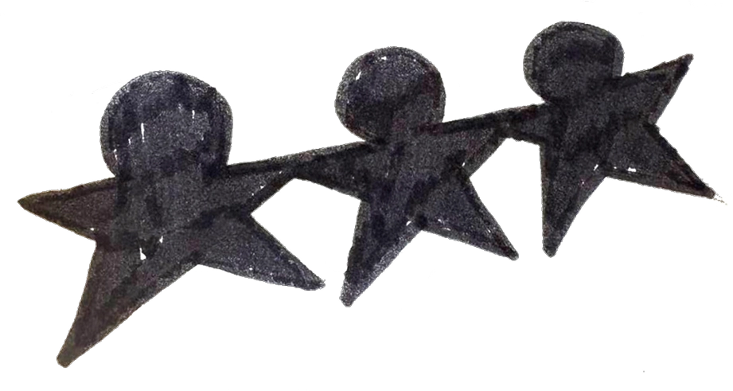
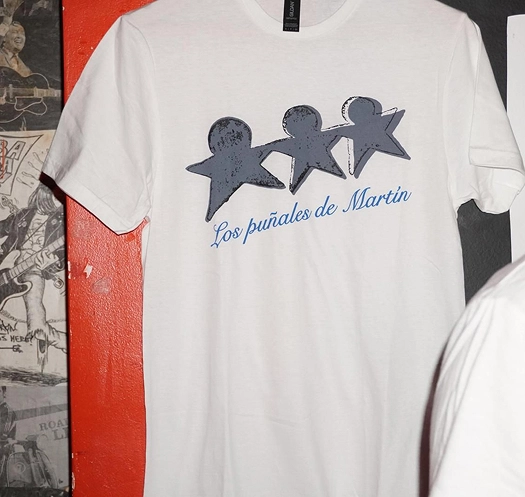
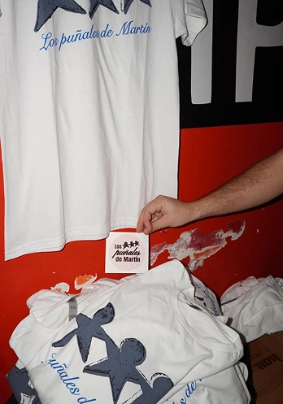
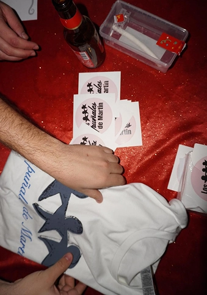
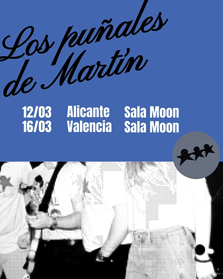
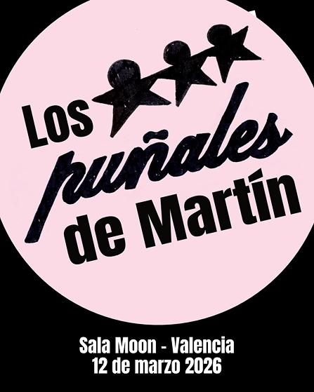
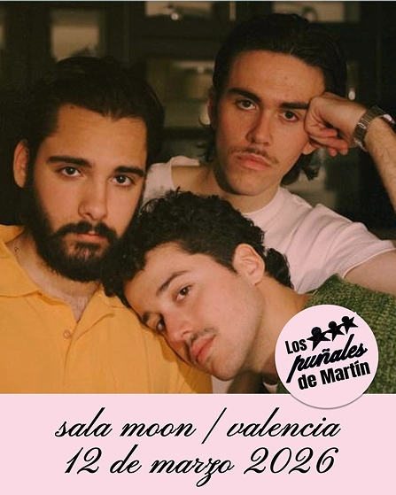
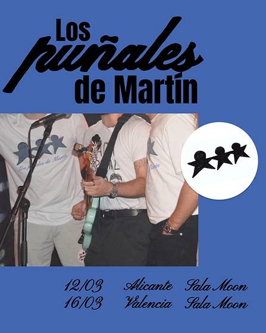

proyecto - Los puñales de Martín
Identidad visual
Puñales de Martín es un grupo de música indie que quería tener una identidad gráfica propia. Flexible, para soportes y que permitiese una identificación rápida. El único requisito del grupo: huir de una imagen de los puñales.

El dibujo de los tres muñecos (el grupo está formado por tres músicos) se convierte en el elemento principal para generar las piezas gráficas y se asienta como el gráfico esencial e identificativo del grupo.



Algunas imágenes del logotipo e identidad gráfica aplicada a camisetas y pegatinas. Se trabaja una estética variada y cambiante, en la que el imagotipo convive con distintas tipografías y modos de aplicación.
Además del logotipo, se trabajan propuestas de aplicaciones para carteles y material promocional. Se establece una paleta de colores y se mantiene la variedad de tipografías.



